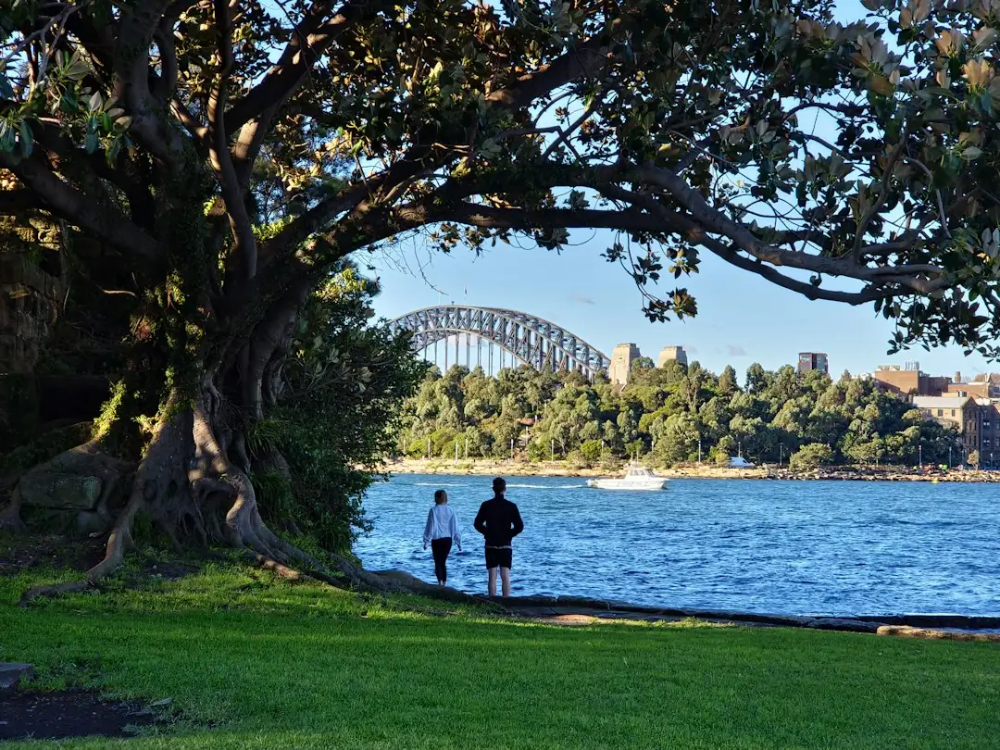

For homeowners comparing tree services sydney options, the practical question is how to brief the tree, access, council checks, power-line issues, disposal and written quote before work starts.
Tree Services Sydney Explained
Sydney Tree Services presents tree work as a scoped property task. Its published guidance says each enquiry is shaped around the tree, site access, council requirements and the outcome the owner wants. That order helps because a Sydney job may involve pruning, removal, stump grinding, an arborist report or more than one service.
A useful enquiry should describe the tree position, nearby buildings, fences, driveway access, services, waste expectations and whether the stump is part of the job. If the tree is near power lines, say so before the first visit. The source guidance states that NSW tree work near power lines must follow SafeWork NSW and the relevant electricity network distributor minimum approach distances.
Readers focused on removal can also compare this related Sydney tree removal guide. For broader work, keep pruning, palm care, hedge trimming, reports and stump grinding in the same quote conversation so each contractor prices the same requested outcome.
Council Checks Before Approval
The published guidance says many Sydney councils require a permit or development consent to remove or heavily prune protected trees under a Tree Preservation Order or Development Control Plan. It also says rules vary by local government area and often use DBH thresholds or protected species lists.
The owner should identify the council area, confirm whether the tree is protected and match the request to the intended work. A light pruning question is different from a heavy pruning or removal question. A contractor can help describe the tree and proposed work, but the relevant council remains the rule source.
- Ask whether a Tree Preservation Order applies before major work is approved.
- Ask whether DBH, species or location changes the approval path.
- Keep the written quote aligned with the permitted scope.
- Ask whether an arborist report is needed for council, risk or development use.
Choosing Pruning, Removal Or A Report
Pruning, removal, stump grinding and reports answer different property questions. Pruning retains and manages the tree. Removal clears it. Stump grinding deals with what remains after removal. An arborist report can support council, development or risk decisions.
For pruning, the key source detail is Australian Standard AS 4373. The guide says selective pruning is carried out to that standard by qualified arborists. For removal, the quote should deal with access, protected-tree checks, power lines, disposal and whether stump work is included. For reports, the request should explain whether the report is for council, risk or development.
When comparing providers, ask what outcome is recommended and why. A quote that only names a broad task is hard to compare with one that states the tree, access assumptions, waste handling, stump position and approval limits.
Cost Signals To Put In Writing
The only price range in the supplied material is broad, but it gives useful quote signals. Sydney residential tree removal in 2026 is described as ranging from around $800 for a small, accessible tree to $6,000 or more for a large tree near buildings or power lines. The stated variables are tree size, species, access and whether stump grinding is included.
Treat that as an indicative range, not a fixed offer. The published disclaimer says quotes, prices, rates and estimates are indicative only and subject to individual circumstances and revision. The decision document is the written quote, with the task, timing, disposal and exclusions set out before approval.
- Confirm whether stump grinding is included or separate.
- Confirm timing, disposal and access assumptions.
- Confirm whether council checks or reports are included.
- Confirm what changes if power-line controls are required.
Who This Applies To
This guide suits Sydney property owners preparing for a site visit where a tree may be protected, close to buildings, close to power lines, difficult to access or part of a wider property change. It is also useful when the owner is deciding whether the right path is pruning, removal or a formal report.
The source material separates qualified arborist work from tree lopping. It says a qualified arborist understands tree biology, risk and safe work practices, while tree lopping generally refers to indiscriminate cutting discouraged by modern arboriculture standards. If the aim is to retain the tree, ask for the pruning objective and the standard being followed.
For hedge trimming, palm care or stump work, the same discipline still helps. Put the location, access, disposal and finish in writing so competing quotes describe the same job.
- Describe the site. Record the suburb, access, nearby buildings, fences, services and the result you want from the job.
- Check approvals. Ask whether council permission, a Tree Preservation Order check or an arborist report is needed before work proceeds.
- Compare quote scope. Make sure each quote includes the same pruning, removal, stump, disposal, timing and exclusion assumptions.
- Approve in writing. Use the itemised written quote as the final scope before any tree work begins.
| Situation | Likely path | Question to ask |
|---|---|---|
| Tree may be protected | Council check or arborist report | Does a TPO, DBH threshold or species rule need checking? |
| Tree is being retained | Selective pruning | Will pruning follow Australian Standard AS 4373? |
| Tree is being cleared | Removal and possible stump grinding | Is stump grinding, disposal and access included? |
| Tree is near power lines | Specialist assessment before work | Are authorised operators required for the distance involved? |
This guide covers Sydney tree work scoping, council checks, pruning standards, quote inputs and approval questions for property owners.